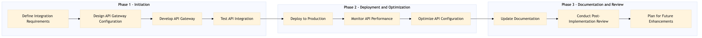

This process document outlines the management of API Gateway for REST NDC SOAP XML integration between OTA and TMC systems.
| Trigger | Initiation of a new API integration or update request by the Platform Engineering team. |
| Outcome | Successful deployment and validation of the API Gateway configuration ensuring seamless communication between all specified systems. |
| Systems | Expedia Group (OTA) Amex GBT / SAP Concur (TMC) AWS SageMaker Snowflake Kafka Salesforce Tableau |

Click to enlarge
| Step | Name & Pain Point | Role | System | Input | Output | KPI | Flags |
|---|---|---|---|---|---|---|---|
| 1.1 | Define Integration Requirements Misalignment between business and technical requirements | Platform Engineer | Expedia Group (OTA) and Amex GBT / SAP Concur (TMC) | Business requirements document | Integration scope and technical specifications | 100% alignment with business needs | ⚠ Exception |
| 1.2 | Design API Gateway Configuration Complexity in designing secure and efficient API configurations | API Developer | AWS SageMaker, Snowflake, Kafka | Integration scope and technical specifications | API Gateway configuration blueprint | 0% errors in design | ⚠ Exception |
| 1.3 | Develop API Gateway Deployment failures due to technical issues | API Developer | AWS SageMaker, Snowflake, Kafka | API Gateway configuration blueprint | Deployed API Gateway | 95% successful deployment rate | ⚠ Exception |
| 1.4 | Test API Integration Identifying and resolving complex integration issues | QA Engineer | Expedia Group (OTA) and Amex GBT / SAP Concur (TMC) | Deployed API Gateway | Test results | 0% defects in integration | ◆ Decision⚠ Exception |
| 1.5 | Deploy to Production Urgent rollback requirements due to production issues | DevOps Engineer | Expedia Group (OTA) and Amex GBT / SAP Concur (TMC) | Test results | Production deployment | 90% uptime post-deployment | ⚠ Exception |
| 1.6 | Monitor API Performance Handling unexpected spikes in API usage | DevOps Engineer | AWS SageMaker, Snowflake, Kafka | Production deployment | Performance metrics | Response time < 500ms | ◆ Decision⚠ Exception |
| 1.7 | Optimize API Configuration Balancing performance optimization with resource constraints | API Developer | AWS SageMaker, Snowflake, Kafka | Performance metrics | Optimized API Gateway configuration | 20% improvement in performance | ⚠ Exception |
| 1.8 | Update Documentation Keeping technical documentation up-to-date | Technical Writer | Salesforce, Tableau | Optimized API Gateway configuration | Updated API documentation | 100% accuracy in documentation | ⚠ Exception |
| 1.9 | Conduct Post-Implementation Review Gathering feedback from all stakeholders | Project Manager | Expedia Group (OTA) and Amex GBT / SAP Concur (TMC) | Updated API documentation | Review report | 100% stakeholder satisfaction | ⚠ Exception |
| 1.10 | Plan for Future Enhancements Aligning future enhancements with business objectives | Product Owner | Expedia Group (OTA) and Amex GBT / SAP Concur (TMC) | Review report | Enhancement plan | 100% alignment with strategic goals | ⚠ Exception |